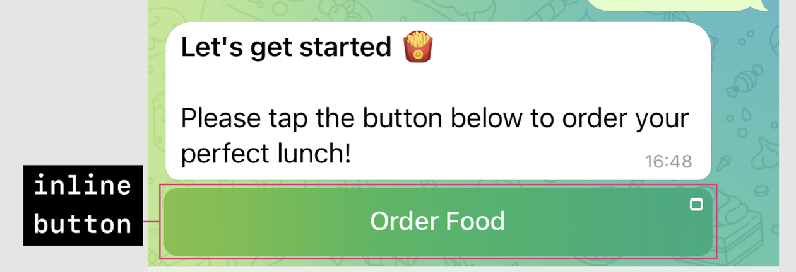

WebApp в тележке
Или приложения внутри телеграмма 💪
Нативное приложение iOS/Android внутри телеграмма?
Браузер внутри телеграмма?
Преимущества 📈
- Поддержка авторизации пользователя(проверка его подлинности)
- Встроенная оплата через различных провайдеров
- Кастомизацию под выбранную пользователем тему
- Мультиплатформенность
Подробнее про каждый из способов
Плюсы
- Веб приложение может передавать данные боту текстом, вызывая метод
Telegram.WebApp.sendData
- Не нужно выставлять эндпоинты наружу для общение с веб приложением
Минусы
- Нет способа получить данные пользователя через переменную
Telegram.WebApp.user
- Кнопки в клавиатуре плохо заходят пользователям, для вызова веб апп
Плюсы
- Доступ к данным Telegram.WebApp.user
- Возможность из апи бота менять текст кнопки, а также url web view
Минусы
- Необходима полноценная авторизация пользователя
Плюсы
- Доступ к данным Telegram.WebApp.user
- Доступ к данным Telegram.WebApp.receiver(при общение в диалоге)
- Доступ к данным Telegram.WebApp.chat(при вызове в группе)
Минусы
- Платно
- Дорого
- Бесплатно работает только в ТЕСТ среде
Из встроенной кнопки
(inline-mode-button)

Плюсы
- Доступ к данным Telegram.WebApp.user
- Взаимодействие с пользователем, путем отправки множества кнопок с разным
контентом
Минусы
- Нельзя отправить в чат текст с кнопкой сразу в WebApp
Обязательно к прочтению 📌
Лайфхак
- Используйте ngrok, это из серии когда вам нужно прокинуть сервис в интернет